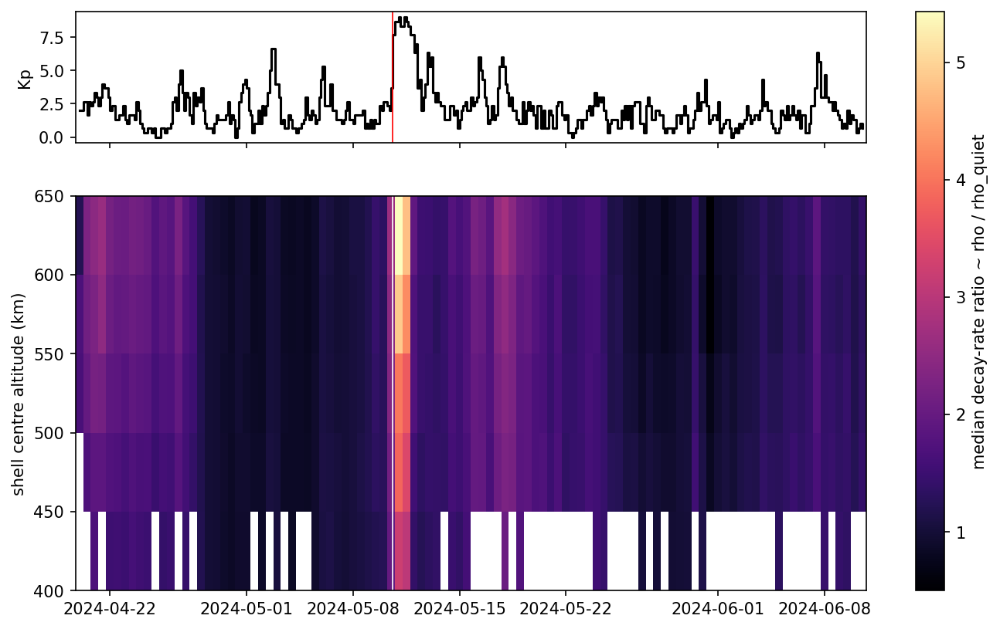
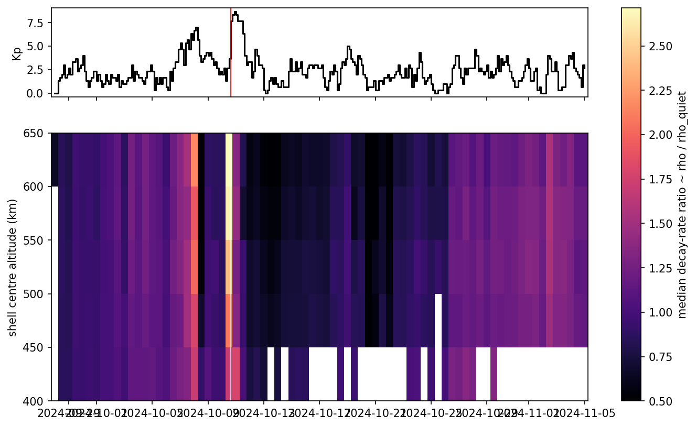

Storm Drag Atlas
Every tracked object in low Earth orbit is a free density probe. Comparing each non-manoeuvring object's decay rate with its own quiet-time rate gives the thermospheric density response, shell by shell, for the whole catalogue at once.
May 2024 storm (Gannon)

research/results/atlas/.debris and rocket-body objects (primary sample) from element sets; onset UT.
| Shell (km) | Peak ratio | Lag after onset (h) | Objects at peak |
|---|
Preregistered hypotheses
Fixed in PREREGISTRATION_ATLAS.md before any catalogue data was downloaded; one analysis run, no thresholds tuned.
| Hypothesis | May 2024 | Oct 2024 replication |
|---|---|---|
| HA1 peak within 72 h of onset (350–550 km) | ||
| HA2 response rises with altitude | ||
| HA3 peak > baseline + 5 sd in ≥ 80 % of shells | ||
| HA4 payloads do not respond more than debris |
Why HA4 failed
Payloads responded more strongly than debris and rocket bodies. A look at the May data after the fact (exploratory, not a preregistered test) points at station-keeping constellation satellites (Starlink, OneWeb): their thrust cancels part of the quiet-time drag, so the baseline rate is small and the storm ratio is inflated. The October 2024 replication preregistered this explanation (PREREGISTRATION_ATLAS_R1.md) before its data was fetched.
| May 2024 (post hoc) | Oct 2024 (preregistered) | |
|---|---|---|
| Constellation peak exceeds debris peak in ≥ 3 shells | ||
| Other payloads within 0.8–1.25× of debris peak in every shell |
October 2024 replication

Replication not run yet.
debris and rocket-body objects; onset UT.
| Shell (km) | Peak ratio | Lag after onset (h) | Objects at peak |
|---|
HA1 is judged exactly as preregistered (peak lag between 0 and 72 h). Shells with a negative lag peaked in the 12 h bin that contains the onset but starts before it; the criterion was not adjusted after seeing this.
Caveats
Mean-element semi-major-axis noise is tens of metres; time resolution is 12 h; solar-flux and other drivers are not regressed out. The ratio is a relative density proxy, not a calibrated density, and it has not been compared with an independent density model. The atlas shows a known effect for the whole catalogue from public data; it is not new physics.
Source data: Space-Track gp_history (not redistributed), CelesTrak SATCAT, GFZ Potsdam Kp. All numbers on this page are filled from research/results/atlas/ by research/atlas/export_site.py.